جلسات استشارية
جلسة مركزة لمناقشة موضوع محدد في الحوكمة، الشراكات، مجالس الإدارة، الصلاحيات، النمو، المخاطر، أو قرار تجاري يحتاج قراءة مستقلة.
طلب جلسة استشارية ←نقدم خدمات حوكمة وتطوير أعمال للمنشآت في مراحل التأسيس والنمو والتحول، ونساند الملاك والقيادات عبر المشاريع الاستشارية، والجلسات بالساعة، والمستشار غير المتفرغ، والإرشاد التنفيذي، وعضوية مجالس الإدارة المستقلة. نوضح القرار، ونرتب الصلاحيات، ونراجع المخاطر، ونجهز المنشأة للنمو أو الشراكة أو الاستثمار أو التصفية.
بدأ عملنا من ملاحظة متكررة: منشآت تملك فرصًا جيدة، لكنها تواجه قرارات غير موثقة، أو صلاحيات متداخلة، أو تحديات نمو تحتاج رأيًا مستقلًا. من هنا تشكل فريق حوكمة وتطوير أعمال يقوده نايف المحمدي، ويعاونه مستشارون متخصصون بحسب طبيعة كل ملف. نعمل مع الملاك ومجالس الإدارة والإدارات التنفيذية، كما نقدم جلسات استشارية وإرشادًا تنفيذيًا لأصحاب الأعمال والقيادات، لتحويل التعقيد إلى قرار منظم ومخرجات قابلة للتطبيق.
ثلاثة مسارات مرنة بحسب طبيعة الحاجة: قرار محدد، دعم مستمر، أو إرشاد تنفيذي لصاحب العمل والقيادي.
جلسة مركزة لمناقشة موضوع محدد في الحوكمة، الشراكات، مجالس الإدارة، الصلاحيات، النمو، المخاطر، أو قرار تجاري يحتاج قراءة مستقلة.
طلب جلسة استشارية ←دعم استشاري مستمر للمالك أو الإدارة أو المجلس عبر اتفاق مرن، واجتماعات دورية، ومراجعة القرارات والملفات وفق حجم الاحتياج.
مناقشة الاحتياج ←مسار خاص لأصحاب الأعمال والقيادات الذين يحتاجون مرشدًا مهنيًا وشريك تفكير مستقلًا لمناقشة القرارات الحساسة، الأولويات، النمو، وتحديات القيادة.
طلب الإرشاد التنفيذي ←للمنشآت في مختلف المراحل، ولأصحاب الأعمال والقيادات الذين يحتاجون قرارًا أو توجيهًا أو دعمًا مؤسسيًا.
نتائج مختارة ودراسة حالة توضح كيف يتحول العمل الاستشاري من تحليل إلى قرار ومخرج قابل للتطبيق.
برنامج لمدة 18 شهرًا في قطاع التعليم شمل إعادة الهيكلة، بناء البنية المؤسسية، ودراسات التوسع والشراكات.
تطوير برنامج وقفي عبر بناء مصادر تمويل، وتحسين المتابعة، وتحويل الأداء إلى تقارير مالية شهرية.
تحويل برنامج مساهمات إلى مورد مستدام من خلال تطوير آليات الاستقطاب، إدارة البيانات، والحوكمة التشغيلية.
متابعة وتنسيق محفظة استثمارية وربط القرارات بين مجلس النظارة ولجنة الاستثمار ورفع توصيات مدعومة بالتحليل.
شركة مساهمة مقفلة في قطاع التعليم الأهلي لم تكن لديها آلية محدثة لمكافآت مجلس الإدارة. تم تحليل الوضع النظامي، وإجراء مقارنة معيارية مع شركات مماثلة، وتصميم سياسة متوازنة تراعي حجم الشركة وأدوار الأعضاء وممارسات السوق.
ندخل على الشركة ونقرأ الوضع الحقيقي: الشركاء، الإدارة، الصلاحيات، القرارات، الوثائق، ومواطن التعطّل.
نبني للشركة نظامًا عمليًا لإدارة القرار: هيكل تنظيمي، مصفوفة صلاحيات، سجل قرارات، وسياسات أساسية.
نرتب الحدود بين دور المالك ودور المدير، ونوضح علاقة الشركاء بالإدارة التنفيذية ومجلس الإدارة أو المديرين.
نقدم دور العضو المستقل أو المستشار الداعم لمجالس الإدارة واللجان، للمساهمة في تحسين جودة القرار، وطرح الأسئلة الصحيحة، ومراجعة المخاطر، ودعم الحوكمة داخل المجلس.
نراجع الكيانات والأنشطة والعقود والتراخيص، ثم نحدد أفضل مسار: دمج، فصل، تحويل، أو تأسيس كيان قابض.
نرفع جاهزية الشركة قبل التفاوض حتى تكون وثائقها وقراراتها وصلاحياتها أوضح وأسهل في الفحص.
نكشف المخاطر التي قد تغيب عن القوائم المالية: تعارض مصالح، قرارات فردية، ضعف توثيق، أو اعتماد على شخص واحد.
نساعد الشركات التي ترغب في الإغلاق النظامي على تجهيز ملف التصفية، قرارات الشركاء، التصويت، وفهم المسار النظامي حتى الشطب.
بعد بناء النظام، نتابع التطبيق فعليًا: زيارة شهرية، متابعة عن بعد، مراجعة قرارات، وتوجيه الفريق.
أدوات رقمية تساعد على التشخيص الأولي وتنظيم النقاش. اضغط على أي بطاقة لفتح الأداة.
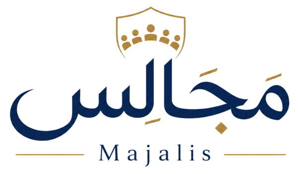
إدارة اجتماعات مجالس الإدارة والجمعيات واللجان، من الدعوة وجدول الأعمال حتى المحضر والقرارات.
فتح الأداة ↗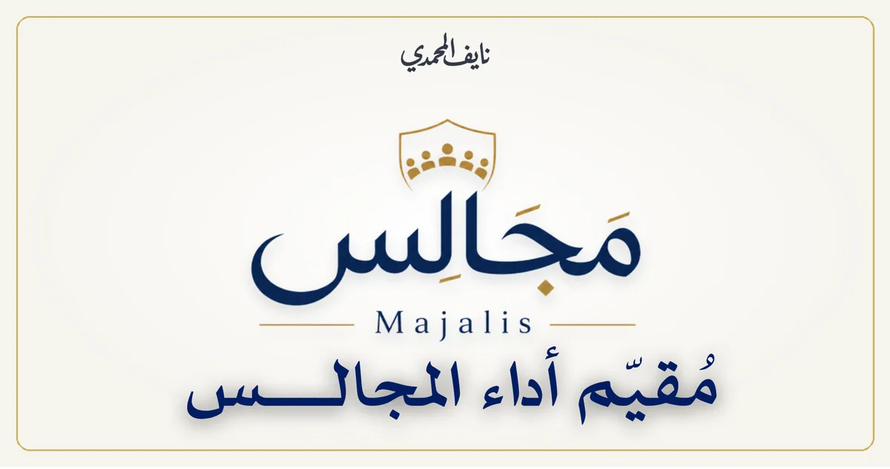
تقييم منظم لأداء المجلس وممارساته، يكشف نقاط القوة وفرص التحسين ويحولها إلى أولويات واضحة.
فتح الأداة ↗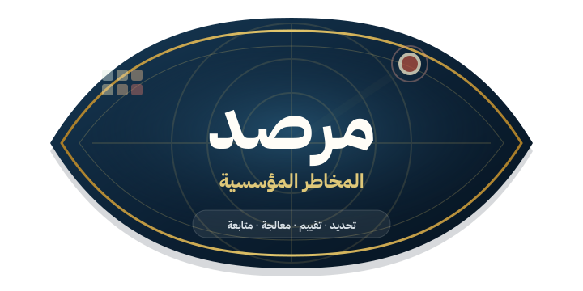
بناء سجل للمخاطر وتقييم احتمالها وأثرها، مع تحديد المسؤوليات وخطط المعالجة والمتابعة.
فتح الأداة ↗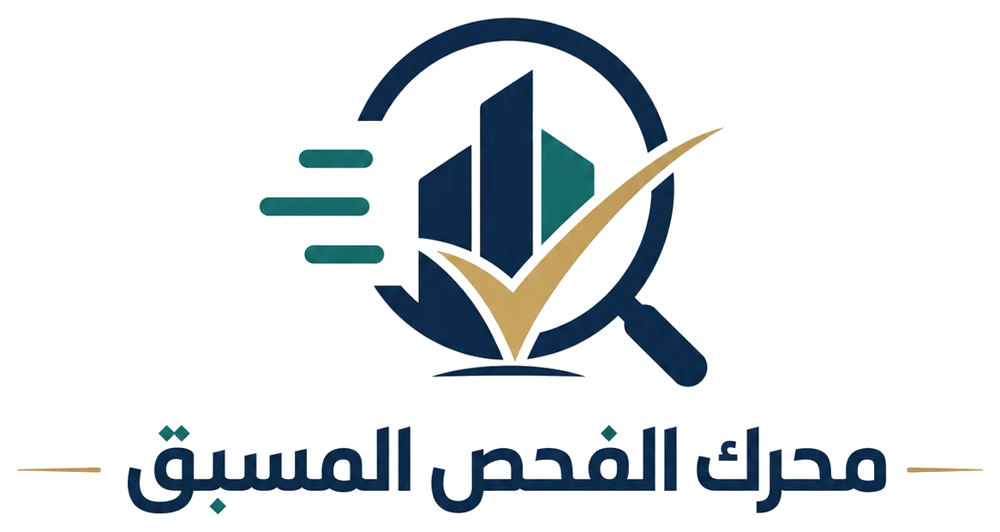
فحص أولي لجاهزية الصفقة، يبرز الفجوات والإشارات الحمراء قبل التفاوض والفحص المهني المتخصص.
فتح الأداة ↗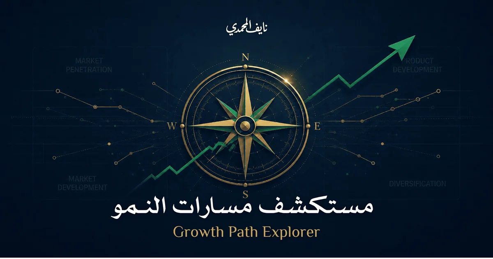
مقارنة مسارات النمو وتحديد الاتجاه الأنسب وحجم التغيير وطريقة التنفيذ وفق جاهزية المنشأة.
فتح الأداة ↗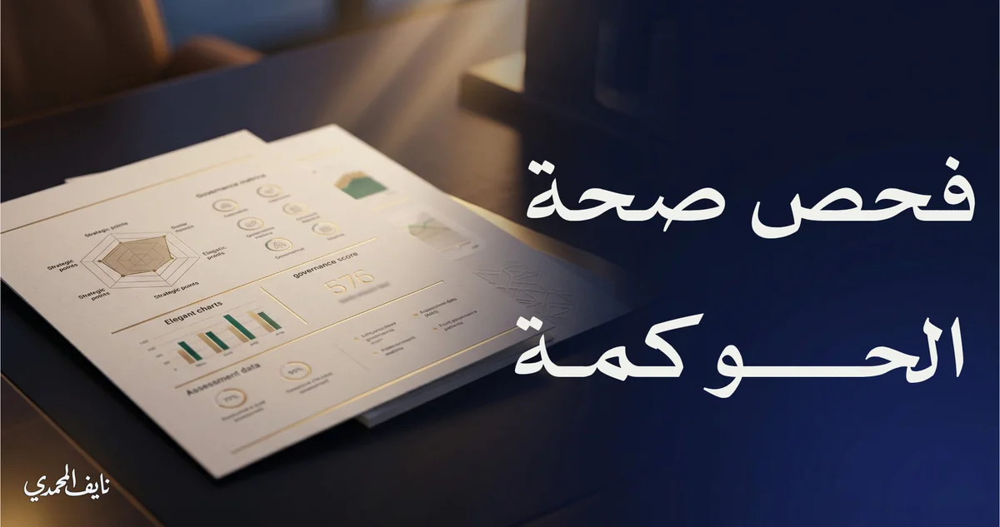
فحص لوضوح الأدوار والقرارات والضبط الداخلي في الشراكات والمشاريع، مع قراءة أولية للمخاطر.
فتح الأداة ↗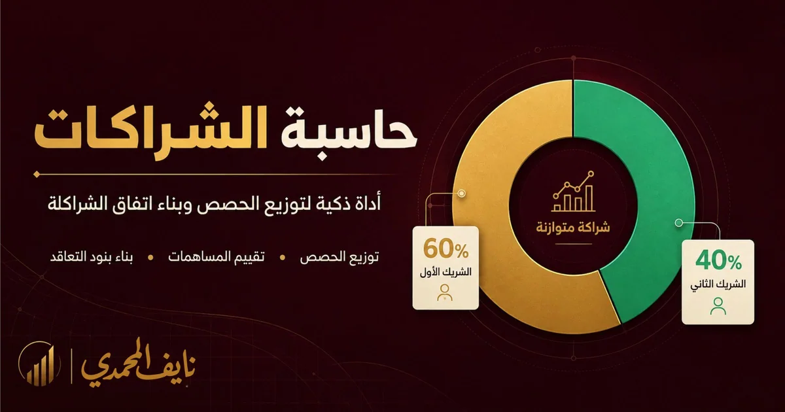
تقدير مساهمات الشركاء وتوزيع الحصص وتجهيز أهم البنود التي تحتاج اتفاقًا واضحًا قبل بدء الشراكة.
فتح الأداة ↗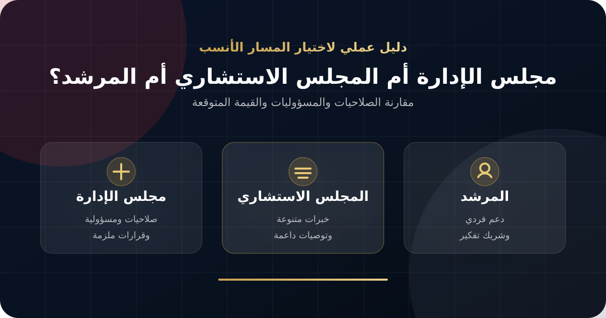
مقارنة واضحة بين المسارات الثلاثة من حيث الصلاحيات والمسؤوليات والتكلفة والقيمة المتوقعة.
فتح الأداة ↗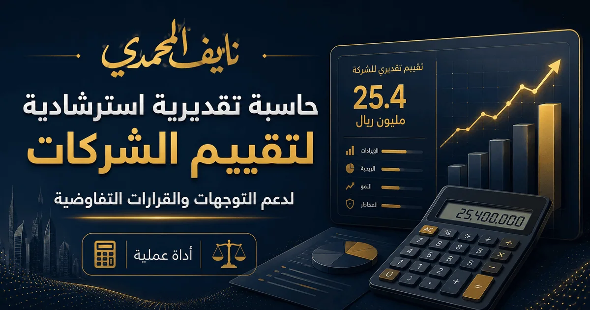
تقدير استرشادي لقيمة المنشأة وقياس جاهزيتها قبل دخول مستثمر أو بدء مفاوضات البيع والشراكة.
فتح الأداة ↗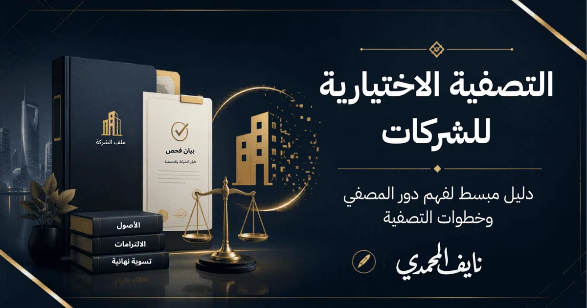
تحديد مهام المصفي ومراحل التصفية الاختيارية والوثائق والمخرجات المطلوبة منذ البدء حتى إقفال الشركة.
فتح الأداة ↗نتائج يلمسها المالك والفريق في القرار والتشغيل والنمو وحماية الشركة.
نماذج من الجهات التي تشرفنا بالعمل معها في أعمال الحوكمة وتطوير الأعمال والاستشارات.
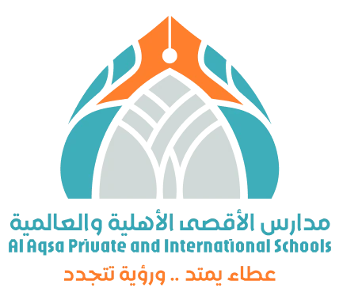
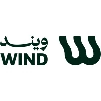
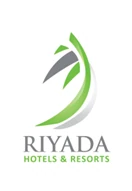
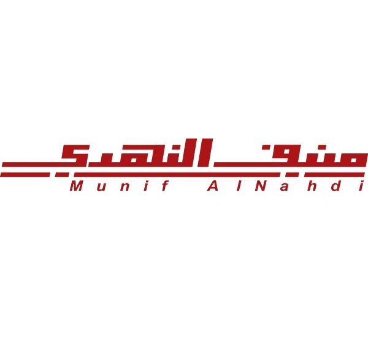
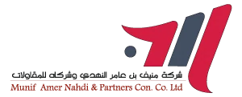
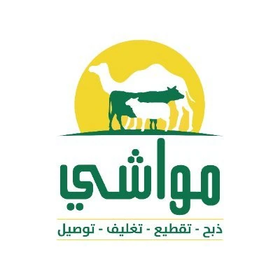
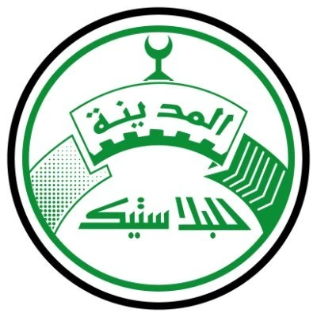
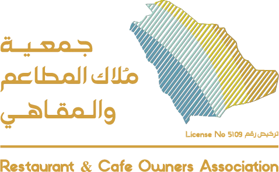
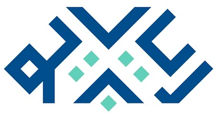
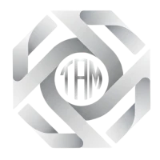
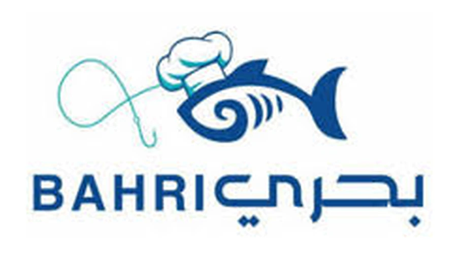
أرسل وصفًا مختصرًا للاحتياج والمرحلة الحالية. نحدد بعدها المسار الأنسب: جلسات استشارية، إرشاد تنفيذي، مستشار غير متفرغ، أو مشروع حوكمة وتطوير أعمال.